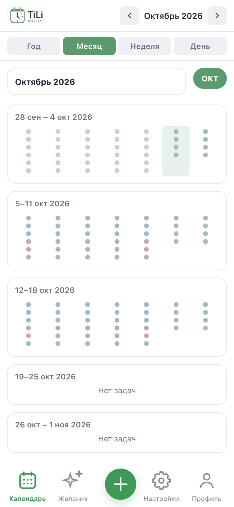

TiLi
Время по часам. Желания по шагам.
TiLi — календарь твоего времени.
Lumi — календарь твоих желаний.
Одна система не даёт дню пройти бесследно, другая — не даёт желанию остаться просто мечтой.

02
TiLi — календарь твоего времени
TiLi помогает увидеть свой день не как список дел, а как пространство времени.
Обычный список показывает, что нужно сделать. TiLi показывает, как эти дела занимают твой день — час за часом.
Ты видишь не только занятое время, но и свободное. Поэтому становится понятно, сколько времени у тебя действительно есть, куда оно уходит и что в этот день реально помещается.
- День как пространствоЗадачи расположены внутри часов, поэтому день воспринимается целиком — от первого дела до свободного вечера.
- Свободное время имеет значениеПустые часы не нужно заполнять. Они тоже часть твоего дня — время для отдыха, спонтанных дел или просто для себя.
- От года до одного часаМожно посмотреть на свою жизнь с разной высоты: год → месяц → неделя → день. А затем приблизиться к конкретному часу.
- Время для важногоTiLi помогает не просто составить план, а заранее увидеть, есть ли в твоём дне место для того, что действительно важно.
Не список дел. Сетка твоего времени.



Lumi — календарь твоих желаний
Помогает не забывать о том, что действительно важно. Записывай желания, разбивай их на маленькие шаги и двигайся к мечте шаг за шагом.
- Желания и цели
- Маленькие шаги
- Чувства и состояния
- Отслеживание прогресса
- Напоминания и поддержка
- Визуализация и вдохновение

Время и желания — рядом, но каждое на своём месте.
У человека ограниченное количество времени и бесконечное количество желаний.
TiLi помогает увидеть, на что уходит твоё время. Lumi помогает не забывать о том, чего ты действительно хочешь.
Между желанием и реальностью не всегда нужен большой план. Иногда нужен всего один маленький шаг — и время, в котором этому шагу есть место.
- Lumi Желание Всё начинается с желания.
- Шаг Маленький шаг Разбиваем его на маленький шаг.
- TiLi Время Находим время в своём дне.
- Действие Шаг превращается в действие.
- 01 Не заполнять всё время желаниями Свободное пространство в календаре — не проблема, которую нужно срочно заполнить.
- 02 Не превращать желания в бесконечный список Желание важно не количеством задач, а тем, что ты к нему возвращаешься.
- 03 Давать важному место Если что-то действительно важно, для этого должен появиться маленький шаг и конкретное время.
Как Lumi и TiLi связаны
- У меня есть желание.
- Я записываю его в Lumi.
- Разбиваю на маленький шаг.
- Если шаг требует времени — отправляю его в TiLi.
- TiLi показывает, когда я это сделаю.
Lumi хранит то, чего ты хочешь. TiLi помогает найти для этого место в реальном времени.
А что ты хочешь сделать со своим временем?
Работает в браузере. Без сложной регистрации.
TiLi бесплатно